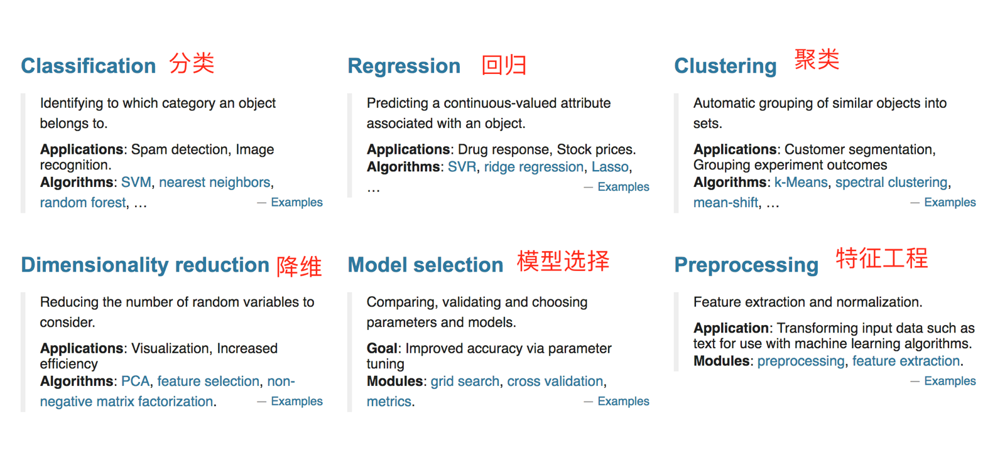
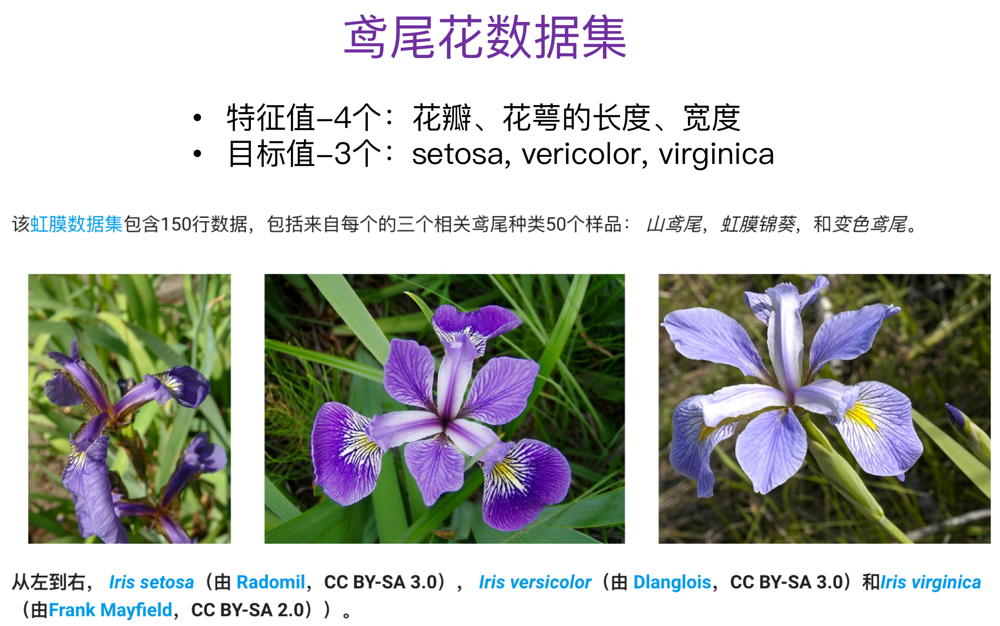

机器学习领域的大神Andrew Ng(吴恩达)老师说“Coming up with features is difficult, time-consuming, requires expert knowledge. “Applied machine learning” is basically feature engineering. ”
注：业界广泛流传：数据和特征决定了机器学习的上限，而模型和算法只是逼近这个上限而已。
特征工程是使用专业背景知识和技巧处理数据，使得特征能在机器学习算法上发挥更好的作用的过程。

特征工程包含内容
Kaggle网址：https://www.kaggle.com/datasets
UCI数据集网址： http://archive.ics.uci.edu/ml/
scikit-learn网址：http://scikit-learn.org/stable/datasets/index.html#datasets
!pip3 install Scikit-learn --user
安装好之后可以通过以下命令查看是否安装成功
import sklearn

sklearn.datasets.load_iris()加载并返回鸢尾花数据集
加载并返回波士顿房价数据集
sklearn.datasets.fetch_20newsgroups(data_home=None,subset=‘train’)
sklearn数据集返回值介绍
load和fetch返回的数据类型datasets.base.Bunch(字典格式)
from sklearn.datasets import load_iris
# 获取鸢尾花数据集
iris = load_iris()
print("鸢尾花数据集的返回值：\n", iris)
# 返回值是一个继承自字典的Bench
print("鸢尾花的特征值:\n", iris["data"])
print("鸢尾花的目标值：\n", iris.target)
print("鸢尾花特征的名字：\n", iris.feature_names)
print("鸢尾花目标值的名字：\n", iris.target_names)
print("鸢尾花的描述：\n", iris.DESCR)
思考：拿到的数据是否全部都用来训练一个模型？
机器学习一般的数据集会划分为两个部分：
划分比例：
数据集划分api
sklearn.model_selection.train_test_split(arrays, *options)from sklearn.datasets import load_iris
from sklearn.model_selection import train_test_split
def datasets_demo():
"""
对鸢尾花数据集的演示
:return: None
"""
# 1、获取鸢尾花数据集
iris = load_iris()
print("鸢尾花数据集的返回值：\n", iris)
# 返回值是一个继承自字典的Bench
print("鸢尾花的特征值:\n", iris["data"])
print("鸢尾花的目标值：\n", iris.target)
print("鸢尾花特征的名字：\n", iris.feature_names)
print("鸢尾花目标值的名字：\n", iris.target_names)
print("鸢尾花的描述：\n", iris.DESCR)
# 2、对鸢尾花数据集进行分割
# 训练集的特征值x_train 测试集的特征值x_test 训练集的目标值y_train 测试集的目标值y_test
x_train, x_test, y_train, y_test = train_test_split(iris.data, iris.target, random_state=22)
print("x_train:\n", x_train.shape)
# 随机数种子
x_train1, x_test1, y_train1, y_test1 = train_test_split(iris.data, iris.target, random_state=6)
x_train2, x_test2, y_train2, y_test2 = train_test_split(iris.data, iris.target, random_state=6)
print("如果随机数种子不一致：\n", x_train == x_train1)
print("如果随机数种子一致：\n", x_train1 == x_train2)
return None
datasets_demo()